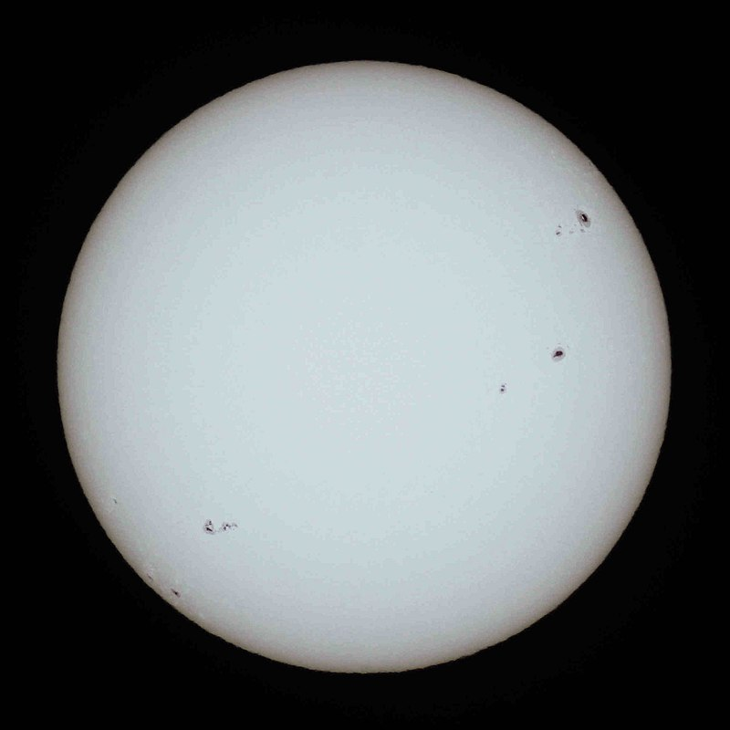

SAO LÙN VÀNG
ĐỊNH NGHĨA
-Một ngôi sao loại G (loại quang phổ: GV), là một ngôi sao dãy chính (loại độ sáng V) thuộc loại quang phổ khoảng 0,84 đến 1,15 khối lượng mặt trời và nhiệt độ bề mặt trong khoảng từ 5.300 đến 6.000 K. [2] , Bảng VII, VIII. Giống như các ngôi sao có trình tự chính khác, một ngôi sao trình tự chính loại G đang chuyển đổi nguyên tố hydro thành helium trong lõi của nó bằng phương pháp tổng hợp hạt nhân.[3] Mặt Trời, ngôi sao mà Trái Đất bị ràng buộc bởi lực hấp dẫn trong hệ Mặt Trời và vật thể có cấp sao biểu kiến lớn nhất, là một ví dụ về ngôi sao có trình tự chính loại G (loại G2V). Mỗi giây, Mặt trời hợp nhất khoảng 600 triệu tấn hydro thành helium, chuyển đổi khoảng 4 triệu tấn vật chất thành năng lượng.[4][5] Bên cạnh Mặt trời, các ví dụ nổi tiếng khác về các ngôi sao theo trình tự chính loại G bao gồm Alpha Centauri A, Tau Ceti và 51 Pegasi.

THUỘC TÍNH
Thuật ngữ sao lùn màu vàng là một cách gọi sai, bởi vì các sao loại G thực sự có màu từ trắng, đối với các loại phát sáng hơn như Mặt Trời, chỉ có màu vàng hơi nhạt đối với các sao thứ tự loại G kém sáng và lớn hơn.[9] Mặt trời trên thực tế là màu trắng, và các đỉnh phổ của nó trong ánh sáng màu xanh lam và xanh lục, nhưng nó thường có thể xuất hiện màu vàng, cam hoặc đỏ trong bầu khí quyển của Trái Đất do sự tán xạ Rayleigh trong khí quyển, đặc biệt là vào lúc bình minh và hoàng hôn.[10][11][12] Ngoài ra, mặc dù thuật ngữ "sao lùn" được sử dụng để đối chiếu các ngôi sao theo trình tự chính màu vàng từ các ngôi sao khổng lồ, các sao lùn màu vàng như Mặt trời chiếm hơn 90% các ngôi sao trong Dải Ngân hà (phần lớn là sao lùn màu cam mờ hơn, sao lùn đỏ sao lùn trắng, cuối cùng là tàn dư của sao).
Một ngôi sao theo trình tự chính loại G sẽ hợp nhất hydro từ vài tỷ năm đến xấp xỉ 20 tỷ năm, cho đến khi nó cạn kiệt ở trung tâm của ngôi sao. Ví dụ, một ngôi sao như Mặt trời sẽ sống trên dãy chính trong 10 tỷ năm. Khi điều này xảy ra, ngôi sao mở rộng gấp nhiều lần kích thước trước đó và trở thành một sao khổng lồ đỏ, như Antares, Betelgeuse, La Superba.[13] Cuối cùng, sao khổng lồ đỏ trút bỏ các lớp khí bên ngoài, trở thành một tinh vân hành tinh, trong khi lõi nhanh chóng nguội đi và co lại thành một sao lùn trắng nhỏ gọn, dày đặc.[3]
NHỮNG TIÊU CHUẨN
Hệ thống Yerkes Atlas đã được sửa đổi (Johnson & Morgan 1953) [14] liệt kê 11 sao tiêu chuẩn phổ lùn loại G; tuy nhiên, không phải tất cả trong số này đã tồn tại cho đến ngày nay như là tiêu chuẩn.
"Điểm neo" của hệ thống phân loại phổ MK trong số các sao lùn trình tự chính loại G, tức là những ngôi sao tiêu chuẩn không thay đổi qua nhiều năm, là beta CVn (G0V), Mặt trời (G2V), Kappa1 Ceti (G5V), 61 Ursae Majoris (G8V).[15] Các sao tiêu chuẩn MK chính khác bao gồm HD 115043 (G1V) và 16 Cygni B (G3V).[16] Các lựa chọn về tiêu chuẩn của người lùn G4 và G6 đã thay đổi một chút qua các năm trong số các phân loại chuyên gia, nhưng các ví dụ thường được sử dụng bao gồm 70 Virginis (G4V) và 82 Eridani (G8V). Vẫn chưa có bất kỳ tiêu chuẩn G7V và G9V nào được thống nhất chung.